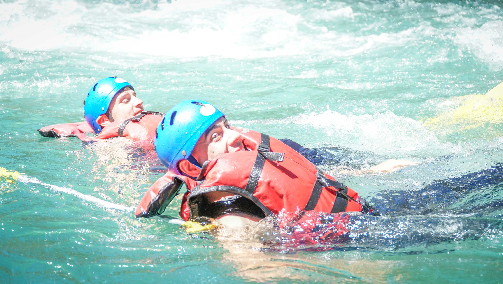
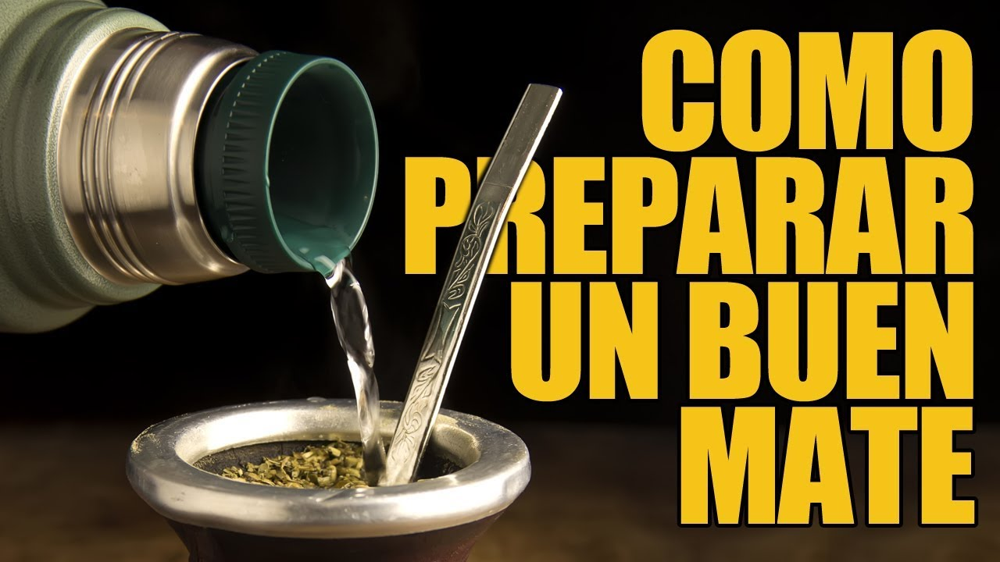

Mi objetivo con este curso es poder tener las herraminetas para trabajar de manera remota y conseguir en algun
momento mi libertad financiera, dejar de trabajar para un jefe y poder manejar mis tiempos
Soy joaquin, actualmente estoy trabajando como empleado en un frigorifico, me gusta practicar deportes, cocinar
y viajar mucho tambien
Multimedia

Listas
Lista numerada
paso 1
paso 2
paso 3
Lista con viñetas
Preparar un buen mate: Un ritual paso a paso

Ingredientes:
Mate
Bombilla
Yerba mate
Agua caliente (entre 70°C y 80°C)
Azúcar (opcional)
Preparación:
Calentar el agua: Llena un termo con agua y caliéntala hasta que esté entre 70°C y 80°C. Es
importante que no hierva, ya que puede quemar la yerba y amargar el mate.
Llenar el mate: Coloca yerba mate en el mate hasta ¾ partes del recipiente. La cantidad de
yerba puede variar según tu gusto, si te gusta un mate más fuerte, agrega más yerba.
Inclinar el mate: Inclina el mate a 45° y agítalo suavemente para distribuir la yerba de
manera uniforme.
Mojar la yerba: Vierte un poco de agua caliente en el hueco que se formó en la yerba
mojada. Deja reposar unos minutos para que la yerba se humedezca.
Colocar la bombilla: Introduce la bombilla en el mate en un ángulo de 45°, asegurándote de
que el filtro esté sumergido en la yerba mojada.
Primer cebado: Vierte agua caliente lentamente a lo largo de la bombilla, llenando el mate
hasta ¾ partes. Evita verter el agua directamente sobre la yerba seca, ya que esto puede lavarla y amargar
el mate.
¡Disfrutar!: Bebe el mate a través de la bombilla, aspirando lentamente. No te apresures,
tómate tu tiempo para saborear el mate.
Recargar: A medida que vayas tomando el mate, agrega más agua caliente según sea necesario.
Puedes cebar el mate varias veces hasta que la yerba pierda su sabor.
Consejos:
Puedes agregar azúcar al mate a tu gusto.
Si el agua está demasiado caliente, puede quemar la yerba y amargar el mate. Es mejor utilizar agua
caliente, pero no hirviendo.
Si la bombilla está obstruida, puedes limpiarla con un hisopo o un cepillo pequeño.
Comparte el mate con amigos y familiares. El mate es una bebida social que se disfruta mejor en compañía.
Dejo aca tambien un paso a paso de el laucha de como preparar un buen mate